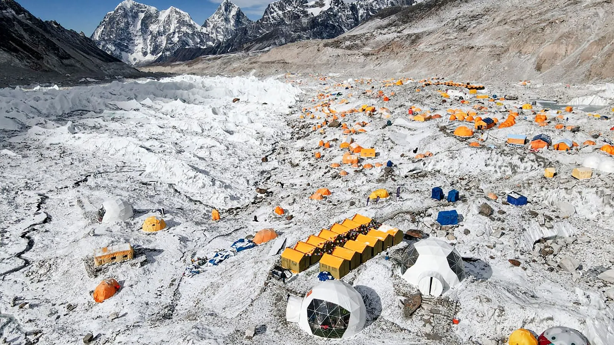
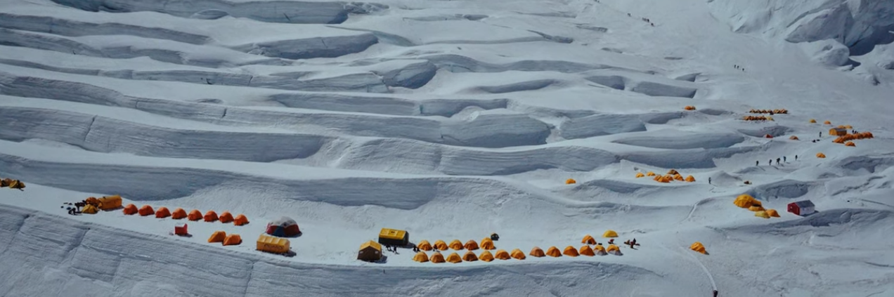
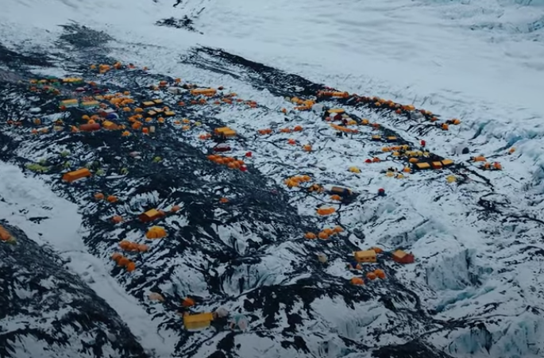
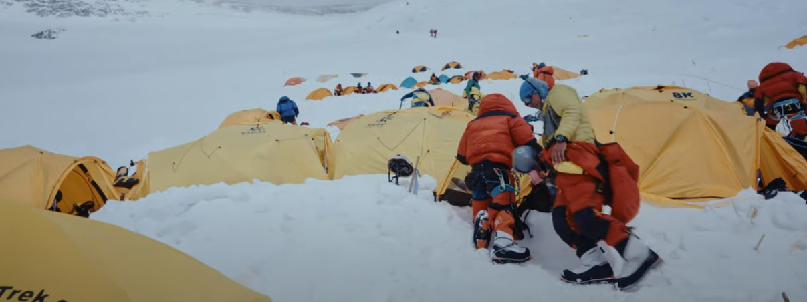
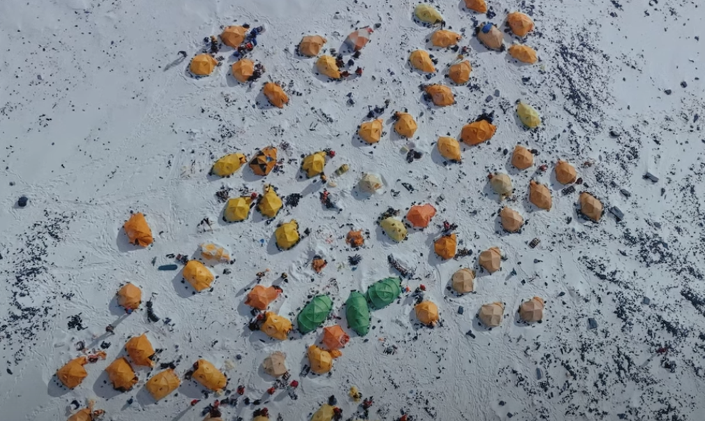
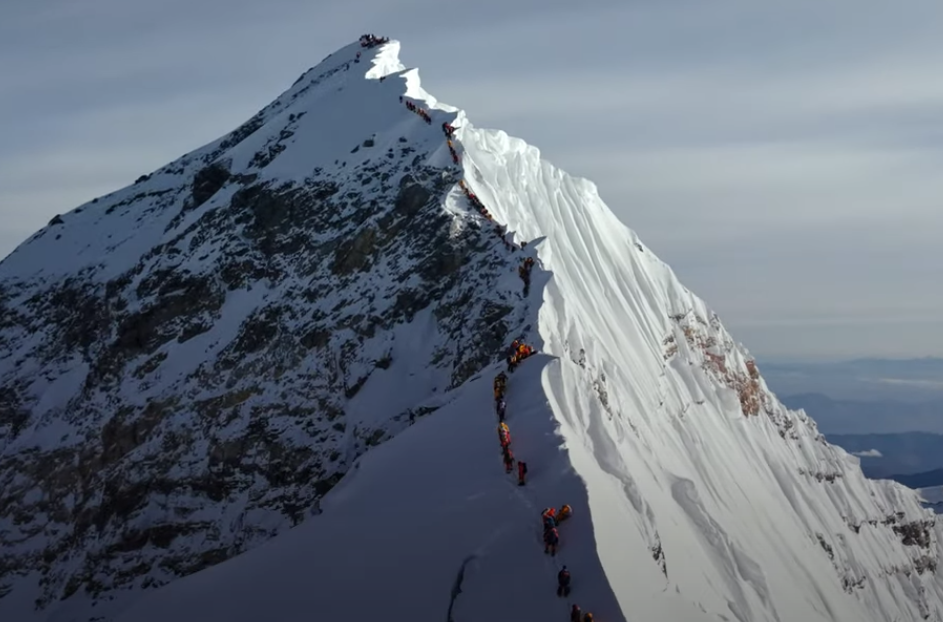

Base Camp
The South Base Camp is located at an elevation of 5,364 meters (17,598 feet) and can be accessed from Nepal. It is comparatively more popular than the North Base Camp. Due to its popularity, South Base Camp might be crowded during the peak climbing season.
Altogether, there are four camps between the South Base Camp and the summit of Everest, with a distance of 20.5 km. After spending about 4 to 5 days in South Base Camp and acclimatizing to the altitude, you will ascend to Camp 1.
Camp I
The Camp 1 on Mount Everest stands at an impressive height of 6,065 meters (19,900 feet). Camp 1 lies just above the Khumbu Icefall, one of the many challenges that many climbers frequently face on Everest. So, there are always dangers of deep crevasses and shifting ice towers lurking, ready to wrap you in it. Climbers find this particular part of the climb really perilous, always chances of getting lost in an icefall maze.
Camp II
Situated at 6,400 meters (21,000 feet), Camp 2 on Mount Everest is a secure path on the way to the summit of Everest. However, having said safe, one can always face unseen challenges such as harsh weather conditions, hypothermia, hypoxia, altitude sickness, etc. In contrast, this part of Everest often serves as a resting phase, where you can rest and acclimatize to the increasing altitude.
Camp III
An additional 762 meters from Camp 2 will take you to Camp 3 (7,162 meters/13,500 feet). Moreover, Camp 3 is located on the Lhotse face, a challenging steep inclination. Reaching Camp 3 can be daunting due to the difficulty of navigating the icy slopes of the Lhotse Wall. For that reason, you need to be physically and mentally prepared for this part of the climb.
Camp IV
The Camp 4 on Mount Everest is the final Camp before reaching the summit. Camp 4 stands tall at 7,925 meters (26,000 feet); above this point lies the most challenging and treacherous “Death Zone”. This Camp is a preparatory camp before attempting the summit. The oxygen level and weather conditions on this section of Everest are dangerously difficult. Hence, climbers should spend as little time as possible and attempt to reach the summit.
Summit
After passing through the perilous “Death Zone” at Camp 4, climbers finally approach the summit of Mount Everest. At an astonishing 8,848 meters. From this highest point on Earth, climbers are rewarded with breathtaking views of the Himalayas and the surrounding landscape.
However, the summit is not without its challenges. At such a high altitude, oxygen levels are dangerously low, and weather conditions can change unexpectedly. Despite the harsh environment, standing on the summit of Everest is a moment of triumph for those who have worked tirelessly to reach the top.
